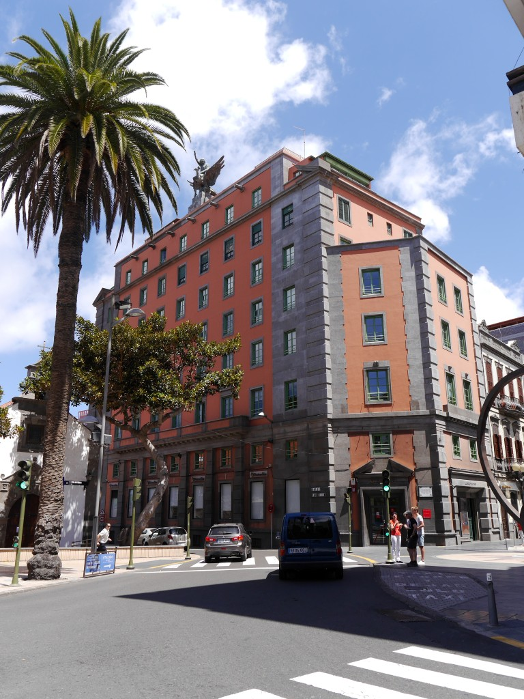

<app-header backButton="true" title="La Unión y el Fénix"></app-header>

<ion-content class="ion-content-routes"> 
  <ion-card class="animated fadeIn">
    <!-- <ion-card-header>
      <ion-card-title></ion-card-title>
    </ion-card-header>  -->
    
    <ion-card-content>
      <app-descriptionroutes descriptionFunction='descriptionRoute112'></app-descriptionroutes>
    </ion-card-content>
  </ion-card>

<ion-card class="animated zoomIn">
  <ion-card-header class="ion-card-header-routes">
    <ion-card-title>What does the sculpture of the image known as The Union and the Phoenix emulate?</ion-card-title>
  </ion-card-header>

    <ion-card-content class="ion-card-content-routes">

      <ion-grid class="ion-grid-routes">
        <ion-row *ngFor="let c of ComponentRoute112">
          <ion-col>
            <ion-button [routerLink]="c.redirecTo">{{c.answer}}</ion-button>
          </ion-col>
        </ion-row>
      </ion-grid>
    </ion-card-content>

</ion-card>

</ion-content> 

<ion-footer>
  <ion-toolbar>
    <app-tabs routerLink="/main"></app-tabs>
  </ion-toolbar>
</ion-footer>